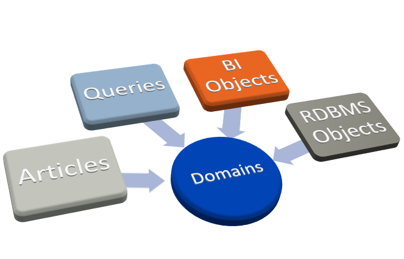
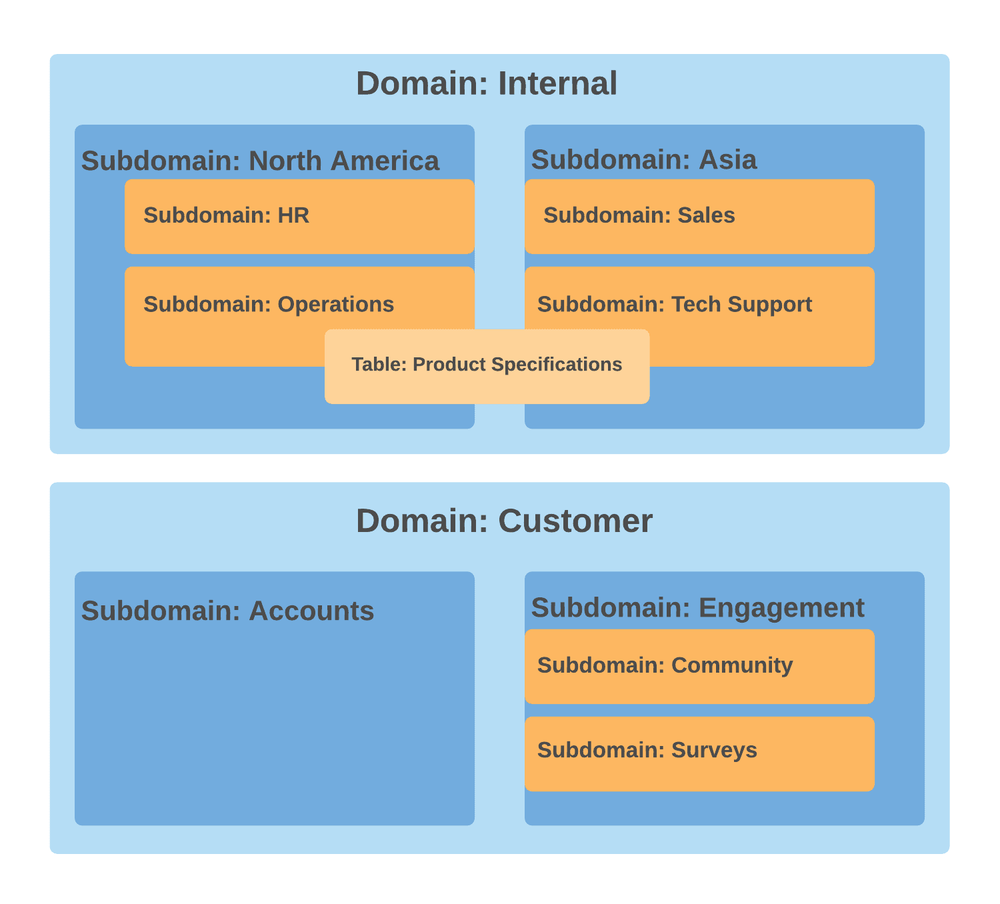
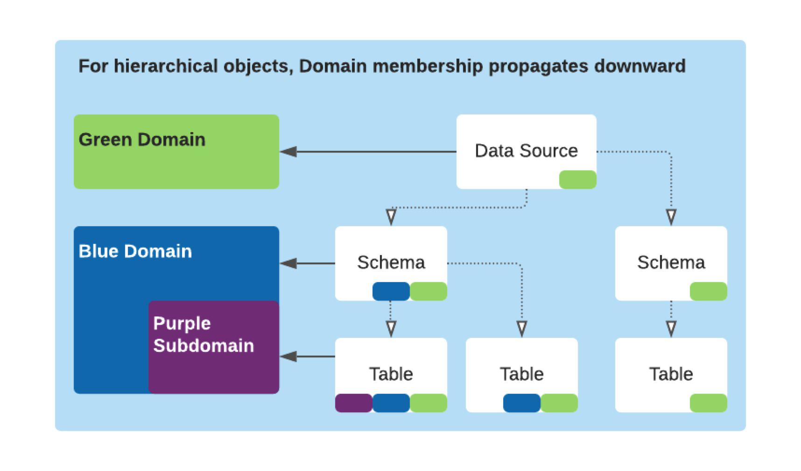
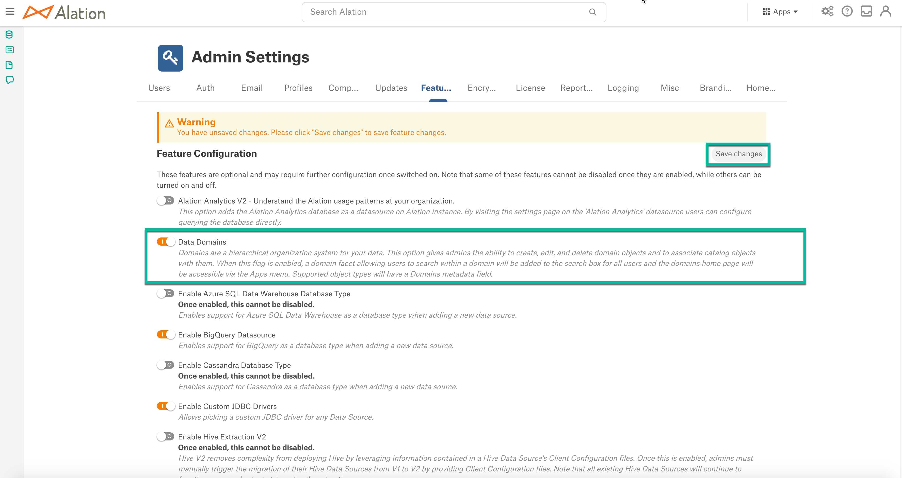
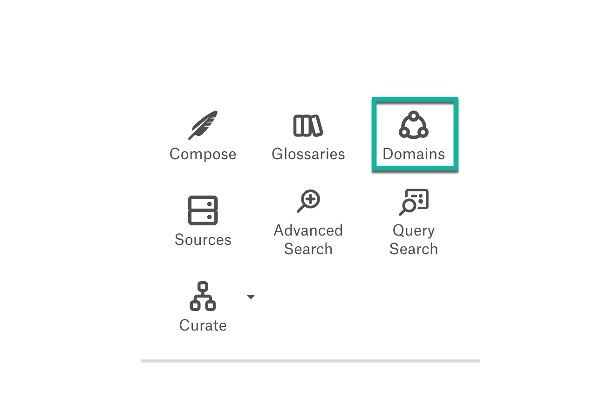
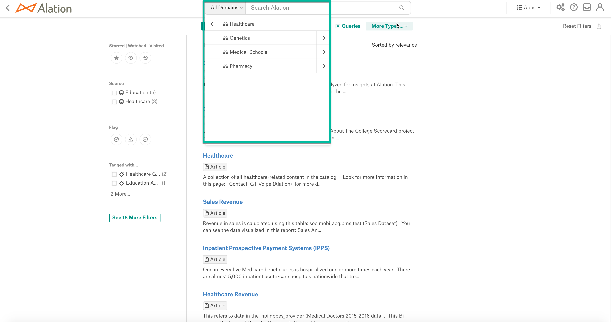
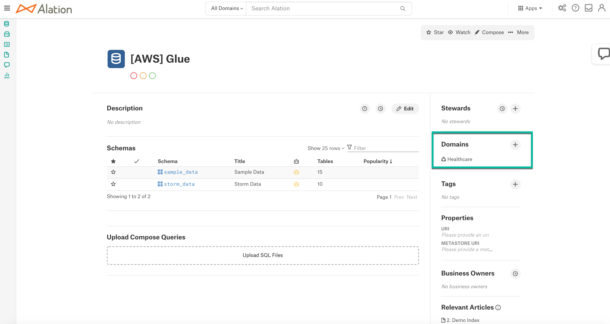
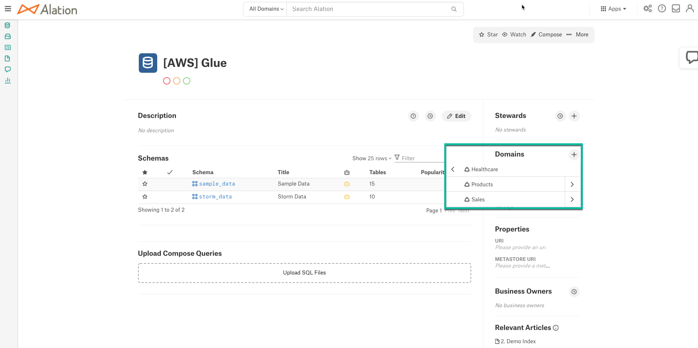

What Are Domains?¶
Alation Cloud Service Applies to Alation Cloud Service instances of Alation
Customer Managed Applies to customer-managed instances of Alation
Available from release 2021.1
Domains are a hierarchical organization system for your data that provides an accessible way of interacting with different types of objects such as RDBMS, BI data sources, Articles, and Queries.
Primarily, Domains let Alation admins logically group catalog objects, increasing discoverability of data by organizing data around context. Searches for catalog objects can be done at the appropriate Domain level. By searching within a Domain, users can find relevant objects with more ease.
Domains are modeled as a hierarchy of top-level Domains and their respective subdomains. Subdomain content is included in the parent level Domains. For example, Domain A that has a subdomain Domain B and any objects to Domain B will appear in searches within Domain A. The content of Domain B is a subset of the content of its parent Domain A. The Domains and objects can be mapped by many to many logic: this means one data object can belong to multiple Domains even in separate Domain hierarchies.
Example:
A Company maintains a warehouse that stores data about its product, company operations, business objectives, customer survey data, and customer satisfaction metrics. The company operates in North America and Asia, and analysts from both the continents use this warehouse to analyze data about their specific company division.
Here is how Company uses Data Domains in their Alation Catalog to help analysts find the relevant data in a faster and more efficient way.
The Catalog stewards analyze the data subjects within the warehouse and come up with two top-level Domains: Internal and Customers. The top domain Internal will contain internal company data about its product, operations, and policies. The other top Domain Customers will organize the data about the Company’s customer base and customer feedback sourced from various channels.
Within Internal, they create two subdomains based on the company geography: North America and Asia. These subdomains include one more subdomain level reflecting the business units operating on each of the continents.
Within Customers, they create 2 subdomains: Accounts and Customer Engagement. The Customer Engagement domain includes 2 more subdomains, Community and Surveys, which point to the source of customer feedback.
Then they perform an audit of the catalog content assigning datasources, schemas, tables, columns, articles, queries and BI objects to a relevant domain or subdomain. Some data objects are added to multiple Domains as they are relevant to multiple aspects of Company analytics.
Now, when analysts search for data, they are able to retrieve objects from a specific Domain or browse each available Domain and apply search filters to a subset of data in the selected Domain.
Domains¶
The Data Domains:
Are a separate object type of the Alation Catalog.
Each Domain object has a dedicated Catalog page.
The catalog template for the Domains object type can be customized by adding, removing, and rearranging custom fields.
All Domains can be viewed from the Apps menu.
Can be created, updated, and deleted by Catalog/Server Admins.
Can be organized hierarchically with several levels of subdomains.
Can be used to categorize other catalog objects.
When a parent object is added to a domain, its child objects are added automatically.
When a schema is added to a domain, its child tables and columns are also added.
Supported Object Types¶
In 2021.2¶
The object types that can be added to Domains are:
Articles
Queries
BI Objects
RDBMS Objects
For Articles and RDBMS objects, you can add a parent object and Alation will add all child objects nested under the parent object to the Domain.
From 2021.2 and Newer¶
BI Objects - You can add a parent BI object and Alation will add all child objects nested under the parent object to the Domain.
File System objects
NoSQL Database objects
Glossaries
API Resources
DataFlow objects
Permissions¶
2021.2 and 2021.2¶
Server Admin or Catalog Admin roles are required to create, edit and delete Domains and Subdomains. Alation users without admin roles can only view Domains and Subdomains.
From 2021.3¶
Stewards of a data object can add data objects and Query authors (users who authored the query in Compose) roles can add Queries to Domains and Subdomains.
From 2021.4¶
Article authors can add or remove an article to or from a domain. In releases prior to 2021.4 only users with the Server Admin or Catalog Admin role could add articles to existing domains.
From 2021.4, users with a Steward or higher role that author articles are able to add their articles to existing domains.
Hierarchy¶
Note
There is no restriction on the number of levels of Subdomains. A Domain or Subdomain can have any number of objects added to them.
Enable Domains¶
Applies to release 2021.1
Important
From 2021.2, Domains are enabled by default and an admin does not need to explicitly enable this feature in Admin Settings > Feature Configuration or using the alation_conf command. The Data Domains toggle will no longer be available in the UI.
The Domains feature is enabled either using alation_conf or in Admin Settings > Feature Configuration.
Enter the Alation shell.
In alation_conf, set the Data Domains flag:
alation_conf alation.domains.enable_domains_service -s True
Restart the uWSGI.
alation_supervisor restart web:uwsgi
Restart the celery.
alation_supervisor restart celery:celery-domains_0 alation_supervisor restart celery:celery-domains_small_0
Alternatively in Feature Configuration:

Go to Settings > Feature Configuration.
Set the Data Domains feature toggle on and click the Save changes button.
In the pop-up, click on Save Configuration to enable the Domains feature.
Restart the uWSGI. This restart needs to be done by the admin with the server-side access on the backend from the Alation shell.
alation_supervisor restart web:uwsgi
Restart the celery.
alation_supervisor restart celery:celery-domains_0 alation_supervisor restart celery:celery-domains_small_0
Once you enable the Domains feature:
The Domains icon becomes available in the Apps menu for all Alation users.

The Domains become available as a Domains drop list in the search menu.

Domains will be added as a search option in the Object Type filter.
From 2021.2:
The Domains icon is available in the Apps menu for all Alation users at all times. Domains do not need to be enabled by an admin starting with this Alation version.
The Domains drop list is available in the Search menu only if there exists at least one Domain in the system. If there are no Domains, the drop list will not be displayed.
Alation without Domains:
Alation with Domains:
The Domains field will be available on Catalog pages from which users can add the object to the Domain.
The Domains field on the Catalog page shows the Domains that the object currently belongs to. To add the object to a Domain, click the Plus icon next to this field and then select a Domain. From 2021.3, the Domains in the Add to Domain dialog are represented as a hierarchy for better visibility of the current Domains structure.

Manage Domains¶
Refer to Manage Domains for information on how to create, customize, and delete Domains in Alation.
Domain Search¶
Refer to Domain Search.